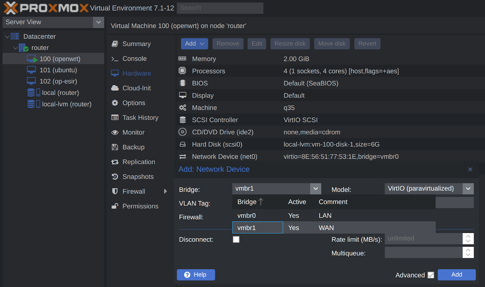
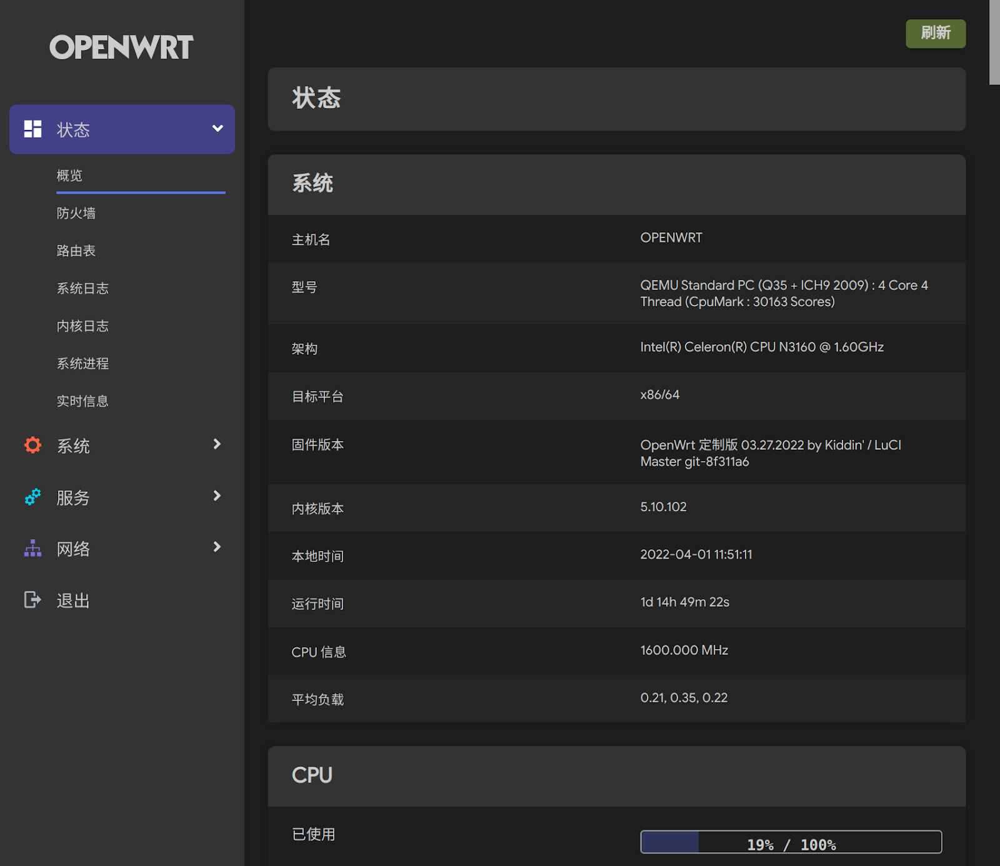
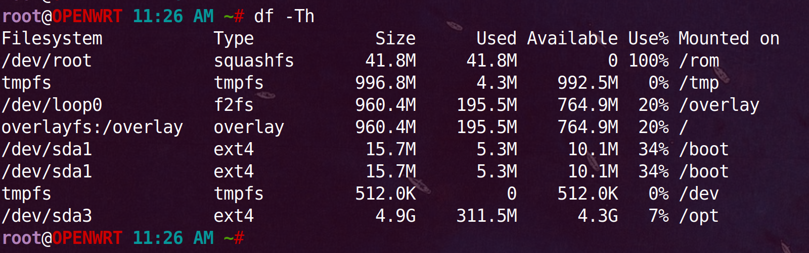
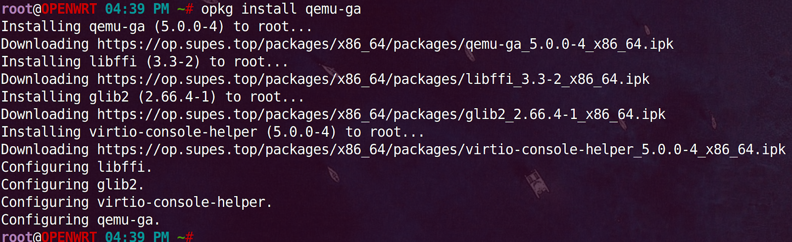
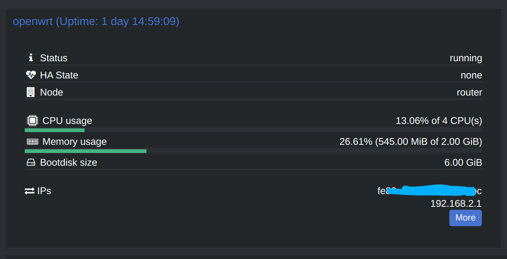

一、上传镜像
如果是压缩包img.gz格式要先解压成img上传
pve版本7上传完成会显示文件存放路径: /var/lib/vz/template/iso

pve版本6双击下方操作日志也会显示。
二、创建vm
一路下一步，过程省略。
可以选择不使用ios镜像。
完成后把默认磁盘删了。
三、生成磁盘
ssh登录pve宿主机
进入镜像存放目录: cd /var/lib/vz/template/iso
创建磁盘: qm importdisk 100 /var/lib/vz/template/iso/openwrt-2022-03-27-x86-64-generic-squashfs-combined.img local-lvm
四、加载磁盘
双击未使用磁盘，添加：
扩容5G：
五、添加网卡
如果cpu支持vt-d硬件直通，则在“硬件添加pci”网卡

如果cpu不支持vt-d硬件直通，则只能使用桥接网卡，先到pve节点网络下创建桥接网卡，备注为WAN口：

回到openwrt硬件，添加网络设备，选择WAN：

六、修改配置
开机自启（start at boot）改为Yes
启动顺序（boot order）改成附加的磁盘：

启用qemu guest agent，让pve宿主机能够与vm通讯：
七、启动openwrt
在pve web界面进入控制台ssh，按回车看到输入光标
vim /etc/config/network
把lan口静态ip改成192.168.2.1
重启生效: /etc/init.d/network restart
浏览器登录openwrt

用磁盘管理（diskman）把扩容的5G分区格式化成ext4，挂载给/opt目录，docker会使用opt作为overlay空间，不会消耗根目录容量。
ssh登录查看磁盘用量，df -Th：

八、cpu跑分
ssh执行: cd /etc && ./coremark.sh
有的镜像是/sbin/cpumark，执行: cpumark
九、网卡测速
opkg install iperf3
server: iperf3 -s -p 4000
client: iperf3 -p 4000 -c 192.168.2.1

因为不是直通，n3160性能偏弱跑不满千兆，7、800也够用。
十、把ash改成bash
ash不能记住历史命令，用起来不方便。
opkg update && opkg install bash
编辑 /etc/passwd 文件
修改第一行（第一行就是 root 用户）中的 /bin/ash，改成 /bin/bash
保存重启路由器生效
查看 /etc/shells 文件可以看到当前系统中有哪些可用的 shell 解释器
/bin/ash
/bin/bash
/bin/rbash
安装vim：opkg install vim
利用bash快速找到历史命令，创建文件：vim ~/.inputrc，粘贴：
“\e[A”: history-search-backward
“\e[B”: history-search-forward
set show-all-if-ambiguous on
set completion-ignore-case on
设置快捷键，创建文件：vim ~/.bashrc，粘贴内容：
HISTSIZE=-1
HISTFILESIZE=-1
alias ll=‘ls -alhFtr’
alias la=‘ls -A’
alias l=‘ls -CF’
执行命令生效：source ~/.bashrc
十一、远程记录日志
https://www.betaflare.com/3730.html
十二、增大session过期时间
vim /etc/config/luci
option sessiontime ‘36000’
十三、安装qemu guest agent
opkg install qemu-ga

pve显示openwrt ip：

十四、修改“半双工”
pve虚拟的openwrt网卡实际为全双工，显示为半双工且没有速度，可通过命令修改
临时生效: ethtool -s eth0 speed 1000 duplex full
永久生效: vim /etc/init.d/network

十五、ddns公网访问
家宽有公网ipv4，映射域名，配上证书，防火墙添加端口转发就可以公网访问。
测试发现80、443端口不通，应该是运营商封了，退而求其次使用非标8443端口。
首先配置域名，我用的cloudflare，在dns添加一条A记录，ip随意比如1.1.1.1：
openwrt配置ddns：
添加ddns服务：
注意“查询主机名”跟“域名”格式不一样，前一个是“.”，后一个是“@”：
回到ddns列表界面，点击“重新加载”会修改域名解析，刷新cf dns列表，已经把 1.1.1.1 改成真实公网ip，本机ping一下验证是否成功。
十六、配置域名ssl证书
web服务通常有多个，最好找台linux当网关统一转发流量，以debian为例，安装docker、nginx、acme.sh颁发证书并自动续期。
获取nginx基础配置：
cd ~/projects/ && mkdir nginx && mkdir nginx/conf.d && mkdir nginx/conf.d/certs
docker run --rm -d --name nginx nginx
docker cp nginx:/etc/nginx/nginx.conf ~/projects/nginx/nginx.conf
docker stop nginx
启动nginx:
docker run -d --restart=always --name nginx -v /home/www/projects/nginx/nginx.conf:/etc/nginx/nginx.conf:ro -v /home/www/projects/nginx/conf.d:/etc/nginx/conf.d:ro --network=host nginx
安装acme.sh：
curl https://get.acme.sh | sh -s email=yourName@gmail.com
exit退出命令行重新登录使acme.sh命令生效
导出环境变量，acme.sh执行时依赖这些变量：
export CF_Token=“”
export CF_Account_ID=“”
export CF_Zone_ID=“”
每家dns服务商的参数不一样，参考：https://github.com/acmesh-official/acme.sh/wiki/dnsapi
颁发泛域名证书（Issue cert）:
acme.sh --issue -d '*.example.com' --dns dns_cf --dnssleep 120 --debug 2 --server letsencrypt
安装证书（Install cert）:
acme.sh --install-cert -d '*.example.com' --key-file /home/www/projects/nginx/conf.d/certs/*.example.com.privkey.pem --fullchain-file /home/www/projects/nginx/conf.d/certs/*.example.com.fullchain.pem --reloadcmd "docker exec -it nginx nginx -s reload" --debug 2
以上命令执行完acme会创建定时任务，以后ssl证书过期前会自动续期：
crontab -l
16 0 * * * “/home/www/.acme.sh”/acme.sh --cron --home “/home/www/.acme.sh” > /home/www/acme.log
为openwrt服务设置反向代理，vim /home/www/projects/nginx/conf.d/openwrt.conf
1 | server{ |
查看nginx容器状态: docker ps -a
查看nginx容器日志: docker logs -f --tail 500 nginx
有错的话根据日志排查。
十七、防火墙 > 端口转发
假设内网debian网关ip为192.168.2.103，则将外网8443/tcp端口转发到debian的443/tcp：
之后可以通过 https://openwrt.example.com:8443 访问家里openwrt，其他服务同理：
If you like this blog or find it useful for you, you are welcome to comment on it. You are also welcome to share this blog, so that more people can participate in it. If the images used in the blog infringe your copyright, please contact the author to delete them. Thank you !